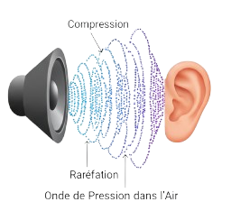
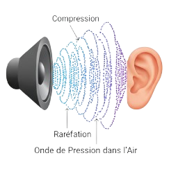

Le Son : Une vibration transformée en signal
Le son est l'un des signaux analogiques les plus fondamentaux de notre environnement. Il est le résultat d'une vibration de l'air qui se propage sous forme d'ondes. Lorsque ces ondes atteignent notre oreille, elles font vibrer le tympan, qui à son tour, transmet ces vibrations à l'oreille interne.
Que ce soit l'oreille humaine ou un microphone, le principe est le même : ces vibrations mécaniques sont converties en un signal électrique analogique. C'est cette conversion qui nous permet d'entendre la musique, les voix, et tous les bruits qui nous entourent, ou de les enregistrer pour une utilisation multimédia.
 
Suivant

Suivant